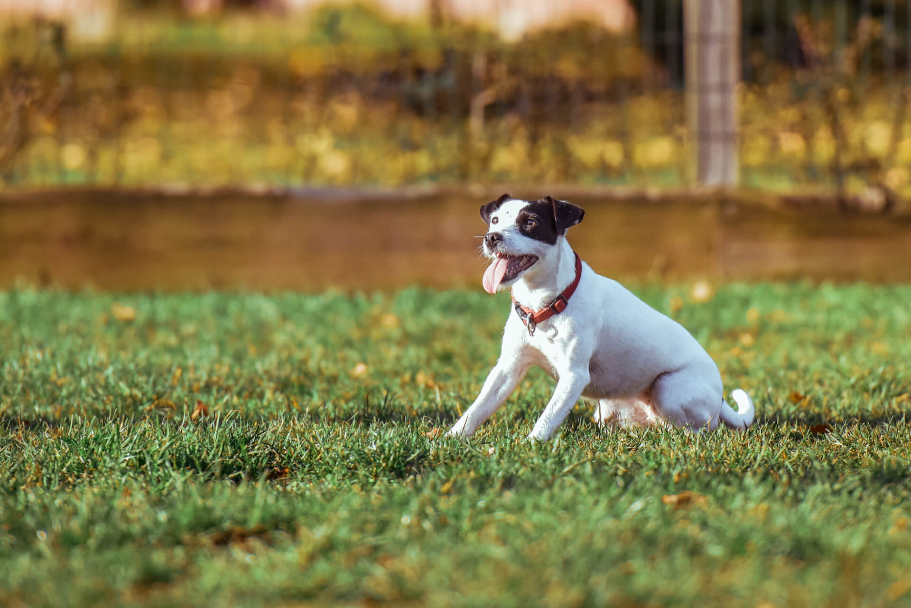

Here at Saving Grace we strive to match the perfect dog with the perfect family. It needs to be the right fit for everyone! We're a non-profit organization dedicated to helping homeless animals in our community find permanent homes where they'll be loved for the rest of their lives.

Dogs at Saving Grace are selected from local shelters where lack of kennel space keeps animals from being placed up for adoption. All dogs are evaluated for temperament and suitability as a family pet. We love it when we can complete a family.

The evaluation continues when the dog is brought into the Saving Grace program. They have access to lots of fresh air and space to run and play together with other dogs. We observe their interaction with new dogs and people on a daily basis.

The dogs that come to Saving Grace are hand-picked as the best dogs in the world, and then they get even better! We only select dogs that get along with other dogs and people. We can help you pick those that would get along best with a family.

Bumper is one special dude! He has limited vision, most likely born with vision impairment but that does not stop him from loving on everyone. His front legs are a little shorter than his rear which adds to his character.